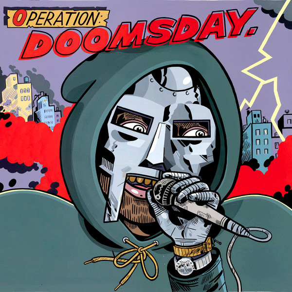

As time went on, Dumile starting getting back into the hip-hop underground community, performing freestyle at different open-mic events. But this time he came with a mask on, similar to the one that Marvel's villain Doctor Doom wore, and he started calling himself MF DOOM. An idea that was tried also during the same time by the French electronic duo Daft Punk, it proved to make the artists more enigmatic and helped them maintain a cult following while also keeping a low profile and maintaining most of their anonimity. Dumile followed the public appereances by the release of his first singles as MF DOOM,"Dead Bent", "Greenbacks" and "The M.I.C.".
Gaining traction and becoming even more popular on the underground scene, Dumile materialized the lyrical and production efforts of the years before in his first LP, "Operation: Doomsday", his first proper piece of work, that included collaborations with prominent hip-hop figures from New York and abroad, and also humorous skits that would pave the way for the dry wit that would be present on all of Doom's work from then on.
